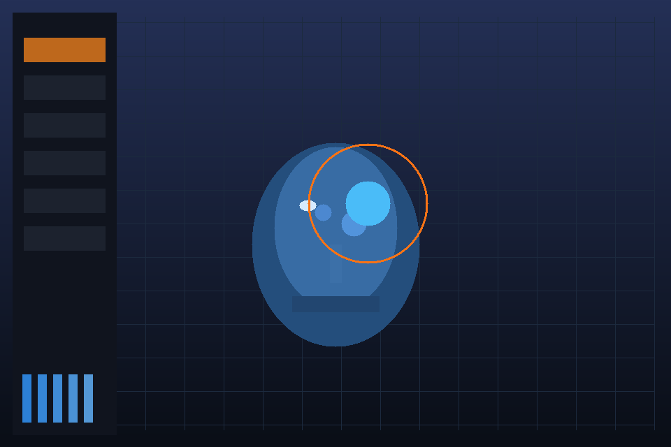

Kain Frontend / Rust Semantics / C Native Host
Native Sculpt Runtime Prototype
Kain authors the sculpt session and tool contract, Rust computes sculpt-facing backend values, and a C native host owns the real Win32 window, message loop, frame pacing, and viewport capture.
Captured Native Viewport

Stroke Energy
279
Rust backend estimate for the active brush packet
Target Polycount
339318
Forecast before full live dyn-topo runtime ownership
Average FPS
34.5
Measured by the native C window loop during the smoke run